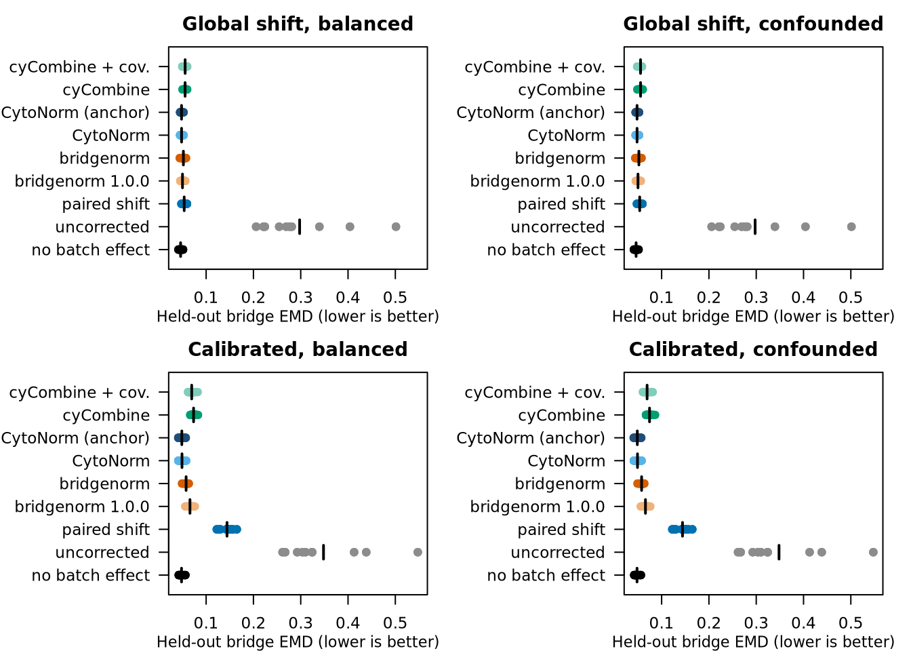
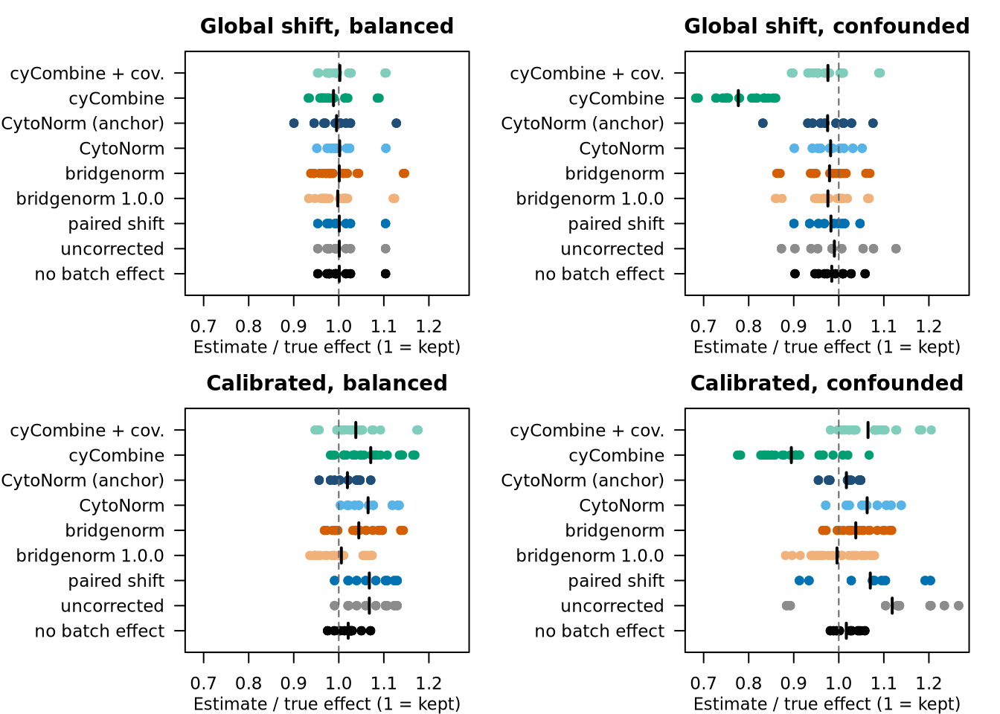
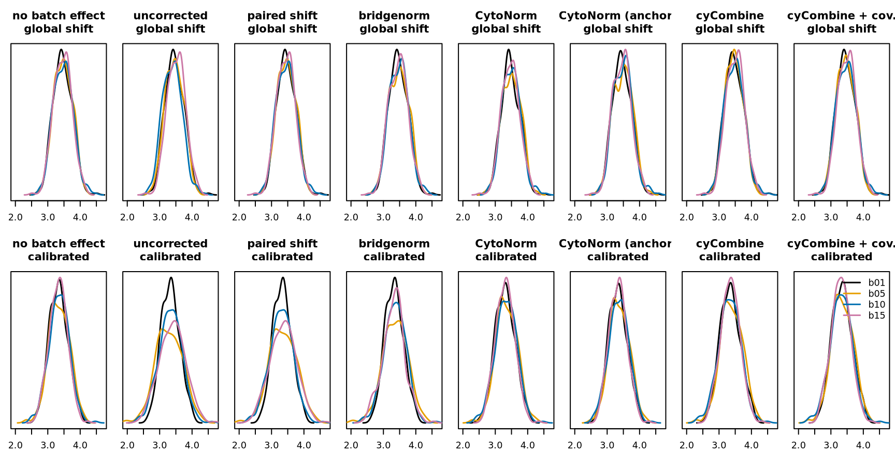
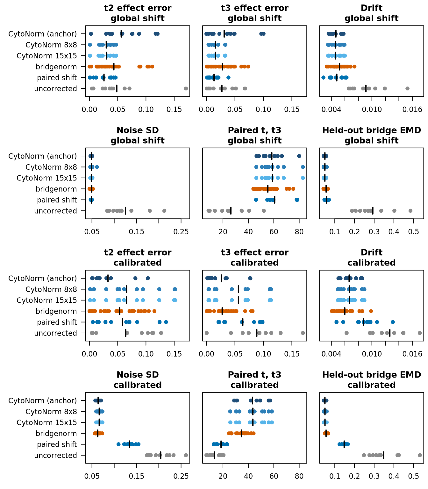
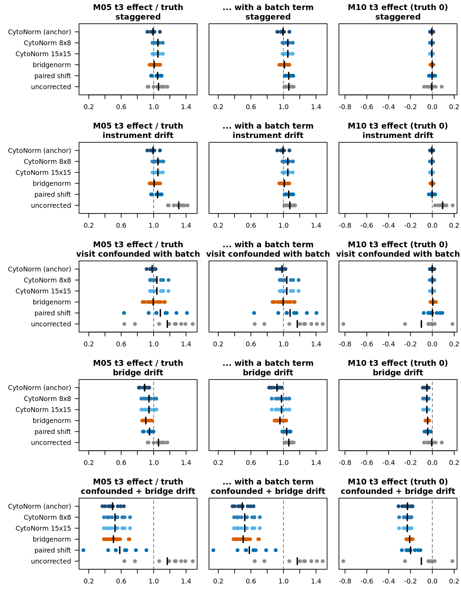

| Setting | Value |
|---|---|
| simulation seeds | 1, 2, 3, 4, 5, 6, 7, 8, 9, 10 |
| SOM seeds | 473, 474, 475 |
| batches | 15 |
| bridge aliquots per batch | 3 (2 fit, 1 held out) |
| study samples per batch | 12 |
| cells per sample | 5000 |
| markers | 24 |
| populations | 8 |
| effect | +0.4 on M05 in population P3 |
| cases per batch (balanced) | 6, 6, 6, 6, 6, 6, 6, 6, 6, 6, 6, 6, 6, 6, 6 |
| cases per batch (confounded) | 1, 2, 2, 3, 4, 5, 5, 6, 7, 7, 8, 9, 10, 10, 11 |
| global shift SD per marker (median) | 0.084 |
| state-specific shift SD per marker (median) | 0.1 |
| log scale SD per marker (median) | 0.236 |
| SOM grid (all methods) | 8x8 |
| bridgenorm | bridgenorm 1.1.0, defaults, all markers mapped |
| CytoNorm | CytoNorm 2.0.10, FlowSOM nCells = 1e+06, xdim = 8, ydim = 8, nClus = 10, scale = FALSE; defaults except the grid; CytoNorm_anchor sets normParams goal to b01 |
| cyCombine | cyCombine 0.3.0, defaults (8x8); run twice: no covariate, and the true condition as covariate |
Compare with CytoNorm and cyCombine on simulated data
This article compares bridgenorm with two widely used batch-correction tools, CytoNorm and cyCombine, on simulated data where the truth is known. The study design and the size of the batch effects are set to realistic values for a multi-batch cytometry study with bridge samples. The methods were run once with the script tools/sim-compare.R in the package repository; the article reads its saved results, so building it does not need CytoNorm or cyCombine.
Simulated data
Each data set has 15 batches. The first batch is the anchor and carries no batch effect. Every batch holds 3 (2 fit, 1 held out) bridge aliquots of one reference donor and 12 study samples from different donors, with 5000 cells per sample. Cells come from 8 populations measured on 24 markers. Study donors differ in population mix and carry small marker offsets. Cases carry a known condition effect: +0.4 on M05 in population P3.
Two kinds of batch effect are simulated:
- Global shift: one shift per batch and marker, the same for every cell. Its size varies by marker; the median standard deviation over batches is 0.084.
-
Calibrated: the global shift plus, per batch, population and marker, a further shift (median SD 0.1) and a stretch or compression of the distribution (median SD of the log scale factor 0.236). The batch effect then differs between cell states and changes the shape of the distributions. The three spreads were measured on bridge wells of an unpublished multi-batch study with bridgenorm at
shrink_k = 0; the scale spread is an upper estimate, because it also holds sampling noise.
And two study designs:
- Balanced: six cases and six controls in every batch.
- Confounded: from 1 to 11 cases per batch (1, 2, 2, 3, 4, 5, 5, 6, 7, 7, 8, 9, 10, 10, 11), so condition and batch overlap.
That makes four scenarios, each simulated with ten seeds; every simulated data set is corrected with three SOM seeds, so each method has 30 replicates per scenario. A last arm keeps the simulated values without batch effect: the floor that sampling noise sets for every score.
Methods and settings
All methods use the same 8 by 8 self-organising map grid; otherwise each runs with its package defaults. bridgenorm and CytoNorm are fitted on two of the three bridge aliquots of every batch; the third is held out for scoring. cyCombine has no separate apply step; it is fitted on and corrects all cells, study samples and the held-out aliquot included, as it is designed to. cyCombine runs twice: with its default of no covariate, and with the true condition (case or control) as covariate, which is what its documentation suggests when the condition is known. That second run uses labels that the bridge-based methods never see. The paired shift (bn_fit_paired(), one shift per batch and marker) is the baseline.
How the methods are scored
- Held-out bridge EMD measures how much batch effect is left. The held-out bridge aliquot is the same donor in every batch, so after a perfect correction its distributions match across batches. Per marker, the score takes the largest one-dimensional earth mover’s distance between any two of the 15 batches, then the median over markers. Lower is better. Sampling noise alone keeps the score above zero.
- Condition-effect recovery measures whether biology survives. Per study sample, the median of the effect marker in the effect population is taken; the effect is the mean of cases minus the mean of controls, with no batch term. The figures show the estimate divided by the true effect, so 1 means the effect is kept.
Batch effect left after correction

Points are the 30 replicates; bars are their mean. The design changes only the study samples, so the bridge-based scores repeat across the two designs.
Global shift. CytoNorm (0.048), bridgenorm (0.052) and the paired shift (0.054) bring the held-out EMD down from 0.298 to nearly the same level; cyCombine leaves slightly more (0.056). A global shift is what the paired shift is built for, so the node-level methods gain little here.
Calibrated batch effect. The paired shift now falls behind (0.144), because one shift per batch and marker cannot follow effects that differ between cell states. CytoNorm leaves the least (0.049), then bridgenorm (0.058) and cyCombine (0.073 without, 0.069 with the covariate). CytoNorm and bridgenorm both learn per-cluster quantile maps from the bridge samples. bridgenorm also pulls each node’s map toward the batch-wide map: with about 150 bridge cells per node here and the default shrink_k = 1000, a node keeps about an eighth of its own map. That explains part of why it leaves more of the cell-state-specific effect than CytoNorm: with shrink_k = 0, the held-out EMD here falls to 0.052.
The defaults changed in bridgenorm 1.1.0, from shrinkage toward the batch-wide curve at the same quantile with shrink_k = 300 (“bridgenorm 1.0.0” in the figures) to shrinkage toward the batch-wide map at the same value with shrink_k = 1000. They were chosen by tuning on held-out bridge wells of two real studies, which are not public. In these simulations the change is a trade-off. Under the calibrated batch effect, the 1.1.0 defaults lower the held-out EMD (from 0.066 to 0.058, lower in 30 of 30 replicates), but raise the error of study cells against their values without batch effect (from 0.067 to 0.071, higher in 30 of 30). Under the global shift the two scores move the other way, and less. Counting a win only when a method is better in every replicate, CytoNorm beats bridgenorm on held-out EMD under the calibrated batch effect: it is lower in 30 of 30 replicates.
Biology kept after correction

Balanced design. With the condition balanced within every batch, a batch effect does not bias the case-control difference much, and every method stays close to the truth.
Confounded design. Here cases sit mostly in some batches, so any batch effect left in the data, or any biology removed as batch effect, biases the estimate.
- Under the calibrated batch effect, the uncorrected estimate is 0.88 to 1.27 times the true effect. bridgenorm (0.96 to 1.12) and CytoNorm (0.97 to 1.14) bring it near 1; the paired shift less so (0.91 to 1.20).
- cyCombine without a covariate shrinks the effect (0.68 to 0.86 under the global shift, 0.78 to 1.07 under the calibrated one). It is fitted on the study samples, and when cases cluster in some batches, part of the case effect looks like batch effect and is removed.
- With the true condition as covariate, cyCombine keeps the effect (0.89 to 1.09 and 0.98 to 1.21), but only because it is told which samples are cases.
Methods that learn the batch effect from bridge samples only never see the condition, so a confounded design cannot pull the condition into their correction.
CytoNorm maps every batch to the mean of all batches by default, while bridgenorm maps to the anchor batch; the effect ratio is read on each method’s own scale. With its goal set to the anchor batch, CytoNorm’s estimate under the calibrated batch effect moves from 1.065 to 1.019 times the true effect (bridgenorm 1.044), so most of CytoNorm’s excess came from its target. On the error of each study cell against its value without batch effect, CytoNorm with the anchor goal is closer than bridgenorm in 30 of 30 replicates under the calibrated batch effect (mean 0.049 against 0.071).
What the correction looks like
The density of the effect marker in effect-population cells of the held-out bridge aliquot, simulation seed 1 and the first SOM seed, balanced design, for four of the fifteen batches. After a good correction, the batches overlap.

Longitudinal study with repeated visits
Clinical studies often sample each subject at several visits, and the visits land in different batches. This section simulates that design to ask whether correction keeps a within-subject change over time. It uses the same simulator, calibration and batches as above, with a staggered design: each batch holds the first visit (t1) of a new cohort of four subjects, the second visit (t2) of the previous cohort and the third visit (t3) of the cohort before that. Thirteen cohorts give 52 subjects over the fifteen batches, so visit and batch overlap within every subject. In one population, one marker rises by 0.2 at t2 and 0.4 at t3; no other marker changes. Each subject keeps one population mix and marker offset across visits, plus small visit-to-visit noise. Both batch effects were simulated with ten seeds, each corrected with three SOM seeds (30 replicates); the script is tools/sim-longitudinal.R.
CytoNorm runs three times here: with its default 15 by 15 grid, with the 8 by 8 grid shared by the other methods, and with its default grid and the anchor batch as goal. Six scores are reported, with no single primary one:
- Effect error at t2 and t3: the mean within-subject change of the effect marker in the effect population, divided by the true change; the score is the distance from 1.
- Drift on no-change markers: the median, over the other markers, of the absolute mean change from t1 to t3. The truth is 0.
- Noise SD on no-change markers: the median, over the other markers, of the standard deviation across subjects of the t1-to-t3 change. Batch effect left in the data adds to this noise.
- Paired t of the t3 effect: the mean change over its standard error, a measure of how easily a study would detect the effect.
- Held-out bridge EMD, as above.

Points are the 30 replicates; bars are their mean. Drift and noise SD are on the no-change markers. Lower is better for every score except the paired t.
In this staggered design, the time effect survives every method, including no correction. Each subject’s visits sit in three consecutive batches, and different subjects meet different batches, so batch effects largely cancel in the mean change. Uncorrected data estimate the t3 effect at 1.061 times the truth under the calibrated batch effect.
What correction buys is precision. Under the calibrated batch effect, the batch effect left in uncorrected data inflates the subject-to-subject noise (0.204) and keeps the paired t at 13. bridgenorm cuts the noise to 0.063 and CytoNorm to 0.066, raising the paired t to 35 and 44. The paired shift gets part of the way (t = 19).
In this design, bridgenorm and CytoNorm keep time effects about equally well, and neither wins across scores. Counting a win only when a method is better in all 30 replicates, bridgenorm against the three CytoNorm settings has 0 wins, 0 losses and 36 ties over the 36 comparisons. bridgenorm has the lower noise under the calibrated batch effect. CytoNorm aligns the held-out bridge aliquot better under the calibrated batch effect (0.050 against 0.056), and its mean paired t is higher, though not in every replicate. The three CytoNorm settings score almost the same. With shrink_k = 0, bridgenorm’s paired t under the calibrated batch effect rises to 44 and its held-out EMD falls to 0.052, but its noise rises to 0.066. Against the 1.0.0 defaults, the 1.1.0 defaults win only on held-out EMD under the calibrated batch effect and tie on every time-effect score; their mean paired t there is 35 against 37.
Harder designs: drift and visits confounded with batch
The staggered design is kind: every subject meets different batches at each visit, so batch effects cancel in the mean change. Four harder designs test what can go wrong, all under the calibrated batch effect:
- Instrument drift: every sample, bridge and study alike, reads two markers (the effect marker M05 and a no-change marker M10) higher by 0.05 per batch, on top of the batch effect.
- Visit confounded with batch: all first visits run in batches 1 to 5, second visits in 6 to 10 and third visits in 11 to 15.
- Bridge drift: the bridge material itself changes, by 0.02 per batch on M05 and M10; the study samples do not.
- Confounded + bridge drift: both.
The time effect is now estimated with a mixed model of the per-sample medians, with a random intercept per subject, and again with a random intercept per batch added, as a downstream analysis might.

Points are the 30 replicates; bars are their mean; dashed lines mark the truth.
Drift of the instrument is removed; drift of the bridge material is not. Under instrument drift, uncorrected data overstate the M05 effect (1.31 times the truth), and every correction brings it back (bridgenorm 1.01, CytoNorm 1.05). When the bridge material drifts instead, every bridge-based correction reads the drift as batch effect and subtracts it from the study samples. The effect shrinks (bridgenorm 0.90, CytoNorm 0.94), and the no-change marker M10 gains a false change (bridgenorm -0.043, against -0.005 uncorrected).
Confounding visit with batch makes bridge drift much worse. With visits in separate blocks of batches, the M05 effect falls to 0.50 of the truth for bridgenorm and 0.52 for CytoNorm, and M10 shows a false change of -0.207. Without bridge drift the same blocked design is safe after correction (bridgenorm 1.00).
A batch term in the downstream model does not repair it. With visit and batch confounded, a batch term cannot separate drift from time; in the staggered designs it recovers only a little. The protection is in the design: keep one bridge lot, check it for drift, and spread each subject’s visits over batches.
Variance left to batch
| uncorrected | no batch effect | paired shift | bridgenorm 1.0.0 | bridgenorm | CytoNorm | CytoNorm (anchor) | cyCombine | cyCombine + cov. | |
|---|---|---|---|---|---|---|---|---|---|
| Global shift, balanced | 47.0 | 7.7 | 8.4 | 8.9 | 9.1 | 8.7 | 8.7 | 0.9 | 0.9 |
| Global shift, confounded | 46.1 | 7.7 | 8.3 | 8.8 | 9.1 | 8.7 | 8.7 | 1.1 | 0.9 |
| Calibrated, balanced | 64.3 | 7.8 | 44.8 | 13.5 | 15.3 | 13.7 | 13.7 | 6.4 | 6.1 |
| Calibrated, confounded | 63.3 | 7.9 | 44.1 | 13.4 | 15.1 | 13.5 | 13.6 | 6.7 | 6.2 |
| Longitudinal, staggered | 44.7 | 0.9 | 29.2 | 5.5 | 6.6 | 5.5 | 5.4 | 6.0 | |
| Longitudinal, visit = batch | 34.7 | 0.6 | 23.0 | 4.1 | 5.0 | 4.1 | 4.1 | 3.1 | |
| Longitudinal, visit = batch + bridge drift | 34.7 | 0.6 | 22.6 | 4.1 | 5.0 | 4.2 | 4.2 | 3.2 |
A second check uses the BatchVaria package, which splits the variance of per-sample features into the share explained by batch, by the condition (or by visit and subject in the longitudinal designs), and the rest. The table gives the percent of variance explained by batch, for the median of each marker in each simulated population of the study samples, as the mean over three simulation seeds; lower is better. The no-batch-effect column is the floor: samples differ by chance, so batch explains a little even without a batch effect. The script is tools/eval-batchvaria.R; it also scores the medians in each node of a shared 5 by 5 SOM, with the same order of methods.
bridgenorm with the 1.0.0 defaults and CytoNorm leave about the same share. The 1.1.0 defaults leave slightly more in every scenario (15.3 against 13.5 percent under the calibrated batch effect), in line with their higher error against the truth. cyCombine falls below the floor (0.9 against 7.7 percent under the global shift): it is fitted on the study samples, so it likely removes chance differences between batches along with the batch effect.
Limits of this comparison
- The simulation was written by the bridgenorm author and follows bridgenorm’s design: one reference donor in every batch, and an anchor batch without batch effect. Its batch effects are shifts and linear stretches within populations.
- The held-out bridge score suits methods that learn from bridge samples. cyCombine is scored on cells it was fitted on, and it targets the mean of all batches rather than the bridge donor.
- In the cross-sectional comparison each method ran with one setting per tool on a shared 8 by 8 grid, which is not the CytoNorm default of 15 by 15; the longitudinal section also runs CytoNorm at 15 by 15.
- CytoNorm maps every batch to the mean of all batches and cyCombine to the mean of all cells, while bridgenorm maps to the anchor batch. The effect ratio is read on each method’s own target scale.
- Ten simulation seeds crossed with three SOM seeds per cross-sectional scenario, and five per longitudinal one, give ranges, not confidence intervals.
- cyCombine’s bridge options (
ref.batchwithanchor) were tried and dropped: its per-cluster ComBat stops when a cluster has no cell of the reference batch, which happened in most runs. - The longitudinal simulation has four subjects per cohort, one changing marker in one population, and visits in consecutive batches. Studies with visits far apart in time, or with bridge material that ages, may behave differently.
- cyCombine and the bridge-based methods answer different questions. cyCombine removes differences between batches of all cells; bridgenorm and CytoNorm remove only what the bridge samples show. Which is right depends on whether biology can differ between batches.